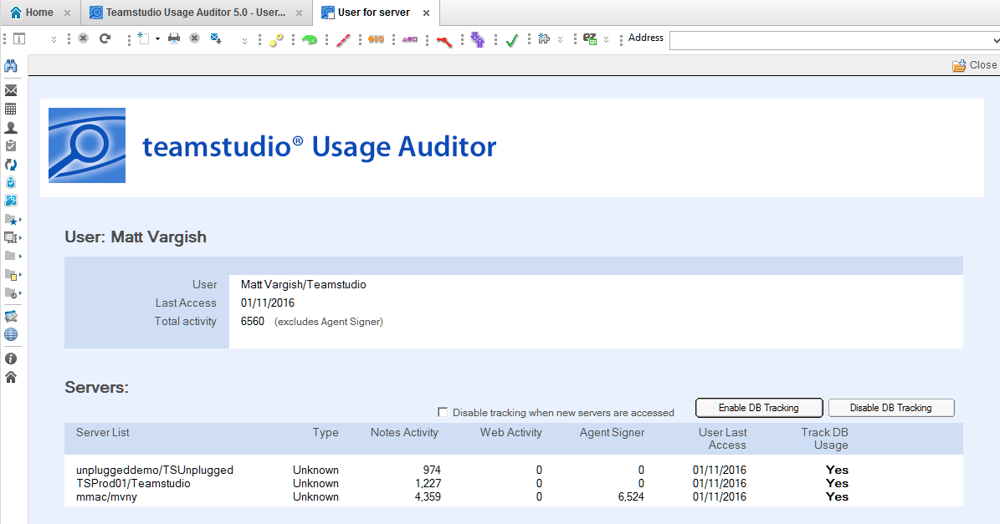
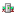
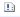

ユーザー利用状況の統計
ユーザーレベルの利用状況の統計はサーバー単位で追跡します:

User Statistic 文書は左のナビゲーターの「By User」のセクションにあるビューで確認できます。ユーザーレベルの統計は Database 用に用意された By User とは異なるものです。Database のビューは、Database 文書に格納した User List にリストされているユーザーでグループ分けしたものです。利用状況は Notes クライアント、HTTP/Webアクセス、エージェントの署名で実行されたものを追跡し、ユーザーが指定されたサーバーに最後にアクセスした日付も追跡します。
ユーザー追跡の有効化／無効化
個々のサーバーごとに利用状況の統計の追跡をするかどうかは User 文書で設定できます。
ひとつ、あるいは複数のサーバー上のデータベースの追跡をやめたい場合には DB Tracking を無効にし、対象のサーバーを選択して無効化します。
以前無効化したサーバーに対して追跡を再開するには、 Enable DB Tracking をクリックし、サーバーを指定します。 また、あるユーザーが対象サーバーにこれまでまったくアクセスしていない場合に、新たにそのサーバーにアクセスした際に自動的に追跡をやめることも可能です。その場合には Disable tracking when new servers are accessed をチェックしてください。
Note
User 文書内で表示されるサーバーレベルのアクティビティのカウントは追跡が無効になっているサーバーに対しても同様に無効になります。
ビューの中でユーザー追跡の有効化／無効化を行う
ビュー内で選択したユーザーに対して Database Activity Tracking アクションを使って有効化／無効化出来ます。
このアクションで、すべてのサーバーの追跡を有効化／無効化できます。
ビューに表示されるアイコンの意味
ユーザービューの第1列に表示されるアイコンは次のユーザータイプを意味しています:
- ユーザーの名前として表され、ドミノディレクトリーで合致したユーザー文書に基づいています

サーバーの名前として表され、ドミノディレクトリーで合致したサーバー文書に基づいています- ドミノディレクトリーには存在しない名前を表しています。グループやサーバーセキュリティ文書を経由してサーバーにアクセスが許されている他ドメインのユーザーである可能性があります。
User ビューにある 'tracked' 列はユーザー追跡が有効か無効かの状態を表します:
- すべてのサーバーでユーザーの追跡が有効
- いくつかのサーバーでユーザーの追跡が行われていない

サーバーのサブセットで追跡が行われている